Why GiveDirectly switched to CommCare to support their Cash Transfer Programs
How a leading humanitarian organization migrated seven countries from TaroWorks to CommCare, cutting project launch times from weeks to days.
Expert perspectives on digital health, frontline technology, and global social impact from the Dimagi team.
No articles match your filters.
How a leading humanitarian organization migrated seven countries from TaroWorks to CommCare, cutting project launch times from weeks to days.

How MiracleFeet scaled clubfoot treatment from 180 to over 500 clinics by automating its CommCare-to-Salesforce data pipeline, saving more than 22,000 staff hours a year.

Your dashboards look great. Forms are submitted on time. Data flows from the field to headquarters without a hitch.

Digital case management goes beyond simple data collection by automating repetitive tasks like client lookups, follow-up scheduling, and performing automated calculations.

See how Guinea digitized its national MILDA campaign with CommCare to reach 18 million people, replacing paper workflows with real-time data-driven insights.

What should you look for when choosing case management software for frontline teams? The answer depends less on feature lists and price, and more on whether the platform can support sophisticated work…

When community health workers in rural Liberia needed to track patient visits, they faced a challenge familiar to programs worldwide: no internet connection for weeks at a time.

How Dimagi built a machine-learning model to help frontline workers in India predict child malnutrition before it happens, and what it means for prevention-first public health.

Beyond monitoring and evaluation: how partners are extending CommCare into asset tracking, fleet management, and internal logistics to do more with leaner budgets.

Learn how Connect KMC bridges the gap in newborn health. We combine digital innovation with Kangaroo Mother Care to deliver life-saving support at home.

Every year, global development and social impact programs, health initiatives, and research projects lose critical insights to paper forms that disappear, spreadsheets that fragment across devices, or…

Dimagi returns to the Global Digital Health Forum to connect with partners, share insights, and shape innovations driving the future of digital health.

Explore key takeaways from the Fall 2025 “What’s New in CommCare” webinar from Smart Performance Alerts to AI-powered tools for leaner teams.

Discover how case management in CommCare can enhance frontline service delivery. Get the new free course, now available on the Dimagi Academy.

Why Many Mobile Data Collection Apps Struggle When you decide to build a mobile data collection app, where do you start? Most teams jump straight into a form builder, recreating their paper surveys qu…

CommCare EU Cloud launches in Ireland, joining India and US hosting options. Choose your data location with identical features, pricing, and security.

Recent budget cuts across international development have created an unprece…

Explore Dimagi’s perspectives on the UNICEF Digital Tool Selection Guidebook for Health Campaigns that recognizes CommCare as a leading tool.

Discover how Somerville's public health workers use CommCare to streamline workflows, improve data sharing, and deliver better care.

How 20 years of savings-group data in Burundi, and real-time CommCare data in Kenya, reveal what truly sustainable, community-owned impact looks like.

The Frontline Worker Advisory Panel puts frontline workers at the center of shaping tools like WellMe to build resilience and reduce burnout.

How Volunteers of America equipped its Community Health Worker workforce with CommCare to address social determinants of health at scale across four US states.

In partnership with WHO and the Bill & Melinda Gates Foundation, CommCare digitized last-mile worker payments for polio and routine immunization campaigns across 16 countries, cutting payment timelines from months to days and reaching some 2 million frontline health workers.

Harnessing AI to empower frontline workers with smarter tools, improving efficiency, decision-making, and impact in global health and beyond.

As USAID restructuring reshapes global development, here’s how Dimagi is supporting partners, from a more affordable CommCare Standard Plan to letters of support and free training.

A look back at Dimagi’s 2024: 173,638 CommCare users, SureAdhere’s 800,000th video, government partnerships across Africa, and impact from global to local.

From a 2009 research project at UC San Diego to a globally recognized tool for tuberculosis treatment adherence, this is the story of SureAdhere, now part of Dimagi.

In October 2024, Dimagi hosted its first CommCare Government Summit in Addis Ababa, bringing 64 health leaders from 11 countries together to scale digital health across Africa.

Dimagi is presenting across eight sessions at GDHF 2024, on the frontiers of AI in global health, improving frontline jobs, and scaling mental health care.

USAID DIV has awarded Dimagi a grant to scale and evaluate CommCare Connect, delivering Vitamin A and ORS to children under five in northern Nigeria.

In September 2024, more than sixty members of our Global Tech Division gathered in Platja d’Aro, Spain for a week of team building, breakout sessions, and reconnecting in person.

GiveWell has awarded Dimagi a grant of more than $1 million to scale service delivery through CommCare Connect and cost-effectively improve essential child health coverage in northern Nigeria.
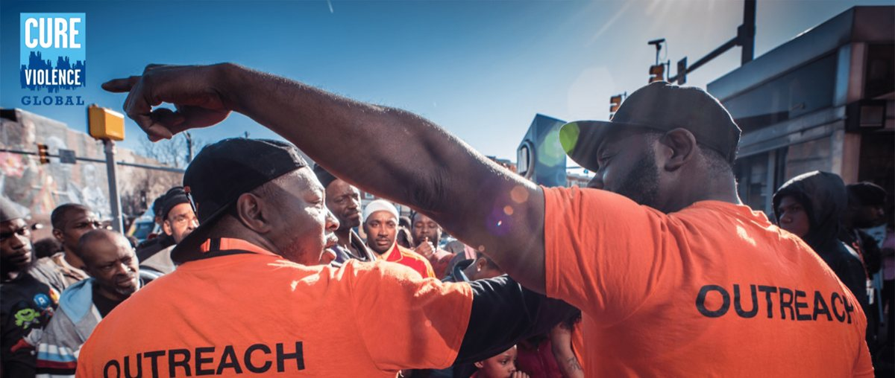
How Cure Violence Global turned data collection with CommCare into a strategic advantage, demonstrating impact across 117 programs worldwide and driving funding for violence prevention.

Dimagi’s perspective on digital solutions for mental health care: how we partner with organizations to scale accessible, cost-effective services across the WHO Optimal Mix of Services pyramid.
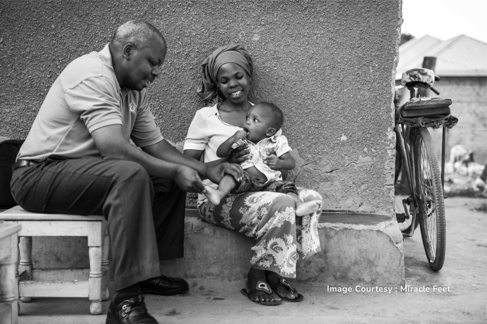
How MiracleFeet uses CommCare and the Impact Delivery approach to scale low-cost clubfoot treatment, reaching nearly 100,000 children across 36 countries.

Pima County, Arizona faces healthcare access challenges from poverty and provider shortages. Its community health workers are a vital resource, and Dimagi is helping integrate technology to support their work and advance population health.

Key milestones for CommCare Connect, strengthening the pillars of digital learning, verification, and payments to Frontline Workers in LMICs.
Explore the work of Tackle (formerly TackleAfrica), an NGO using football to deliver HIV and Sexual & Reproductive Health & Rights information to young people across Africa, and its move from paper to digital data collection through the CommCare Research Grant.

The Foundation for Community Work (FCW) chose CommCare to digitize its out-of-center early childhood development program, equipping home visitors in South Africa to streamline service delivery and track real impact for children and families.

Join Dimagi at the ICT4D Conference 2024 in Accra, Ghana. Sign up for our Advanced CommCare Training and connect with our team on digital development.

One year after launching the first CommCare Grant for Frontline Research, we share insights from first-place winner Move Up Global, whose study in rural Rwanda targets neglected tropical diseases and malnutrition among school-aged children.

Learn how the World Poultry Foundation addressed challenges in collecting real-time data from the field, and explore their journey to find an affordable, sustainable mobile digital solution built on CommCare.

A Dimagi design contractor shares how empathy and the five stages of design thinking shape user-centered solutions, from a rural-artisan e-commerce app to everyday products.

Reflections and early learnings from the 2023 design and testing of CommCare Connect, Dimagi's platform that lets Frontline Workers learn, deliver, verify, and get paid for essential services.

Dimagi empowers community health workers to provide top-quality care to the most vulnerable residents of Martha’s Vineyard.

Get an inside look at Dimagi's evolution over the past decade with Simon Kelly, our Senior Director of Server Engineering. Don't miss out on this insightful conversation.

In September 2023, Dimagi hosted its Inaugural CommCare Enterprise Summit in Washington D.C., where 14 of 16 Enterprise Partners reaching a collective 1.2 billion people gathered to share challenges and expertise.
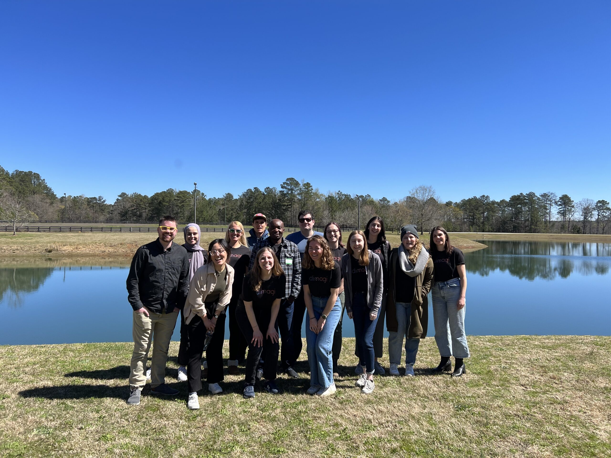
Julia Fuller shares her career journey as a community health professional with a background in clinical psychology, including challenges faced and advice for balancing work and studies while pursui…

From project manager to Director of Data & Analytics at Dimagi, join us as we explore Riya Singh's inspiring journey and her significant contributions to the company's success.

Discover the remarkable journey of Zohaib Ali Khusru, from mechanical engineering to becoming a Technical Project Manager at Dimagi's India Division, where he combines software development expertis…

Dimagi and Sangath collaborate for NAMASTE program, developing an app to provide home-based counseling intervention for South Asian parents of children with autism.

A Q3 progress update on WellMe, Dimagi's resilience-building app for Frontline Workers, covering pilot projects in India and Nigeria, a beta testing program, and key feedback from health workers.

Explore Charles Aphrem's inspiring journey as a Project Analyst on Dimagi's India Division Delivery team, where he combines skills and passion to make a difference in the social impact space, toget…

This article explores an individual's transition from intern to a full-time team member at Dimagi, highlighting their unconventional journey, overcoming challenges, and personal growth along the way.

Dimagi has made the 2023 Inc. 5000 list of the fastest-growing private companies in America for the 10th time, alongside some of the economy's most dynamic and entrepreneurial businesses.

Gain exclusive insight into Dimagi's Solutions Division as Senior Technical Project Analyst, Aubrey Chirwa, shares his experiences and journey as part of the Delivery team.

Learn more about CommCare's case management capabilities and how Case List Explorer lets you link forms together, track subjects, and analyze changes over time.

More than 1 billion people worldwide need additional accessibility to engage with technology. A Dimagi designer shares why inclusive design matters and how to build for everyone.
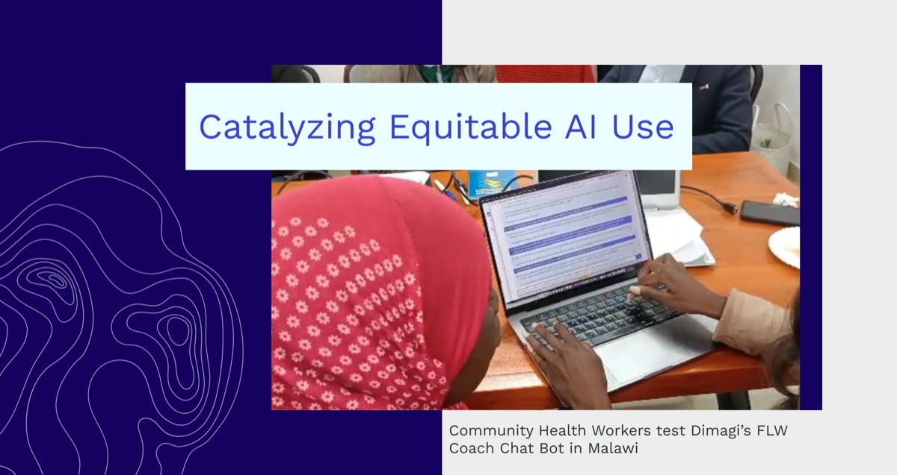
Dimagi is a winner of a Grand Challenges grant funded by the Gates Foundation. Led by Dr. Neal Lesh, the team will build an LLM-powered coach to support and supervise frontline workers.

Learn more about Dimagi’s first-ever CommCare Enterprise Summit, taking place from September 19 to 21 in Washington DC and hosting 16 of our software as a service (SaaS) CommCare Enterprise partners.

Learn more about Dimagi's Solutions Division as Themba Nyirenda shares his experiences and journey as a Senior Technical Project Analyst on the Delivery team.

How the CommCare Transitional Housing care coordination solution helped Vermont prove that the right technology, combined with targeted efforts, can make an outsize, positive impact on housing insecurity.

How Colorado’s Behavioral Health Administration partnered with Dimagi to build a centralized CommCare registry for medication assisted therapy, so 97% of client admissions no longer require state intervention.

Learn more about the CommCare Provider Program and the important work it does to support local capacity building and strengthening in low- and middle-income countries.

This Q&A explores a 'day in the life of' Dhivya Sivaramakrishnan a Project Manager on the Delivery team for the India Division at Dimagi.
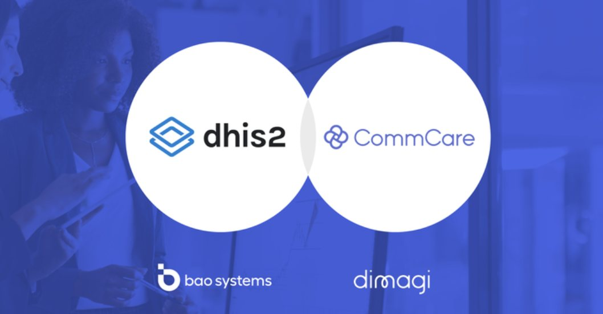
BAO Systems and Dimagi announce a partnership to support communities connecting CommCare and DHIS2, streamlining data flow from collection to integration to analysis and use.

The Q&A provides insights into the Solutions Delivery team at Dimagi, including A Day in the Life of Wouter Vink, Director of Solutions Delivery, Solutions Division, their consulting role, unique c…
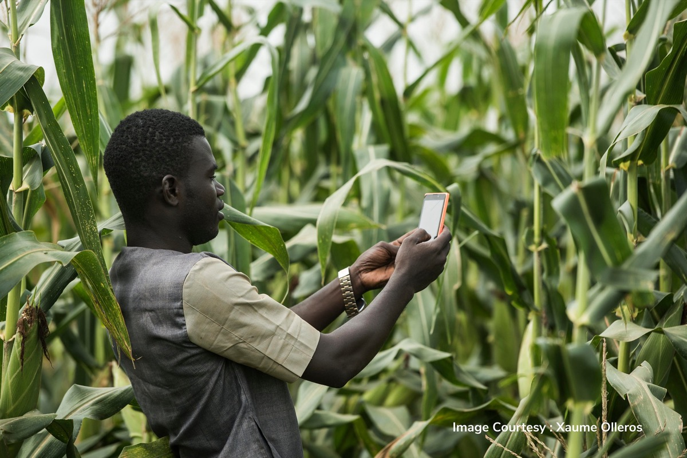
Learn more about the work Dimagi is doing to contribute to the equitable use of large language models as part of our overall mission to foster impactful, equitable, robust, and scalable digital solutions.
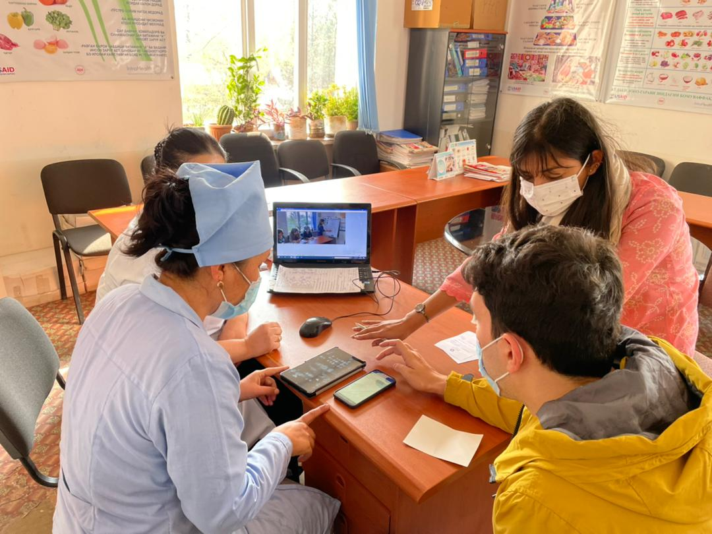
Learn more about Dimagi's Solutions Division, as Project Manager Namrata Tomar shares her experience, and day-in-the-life-of journey.

WellMe is a wellbeing and resilience application designed to promote resilience-building behaviors and prevent burnout among Frontline Workers. Dimagi outlines its theory of change and a plan to pilot the platform with 1,200 Frontline Workers.
On International Workers' Day, Dimagi recognizes and supports community health workers through CommCare, advocating for better working conditions and workers' rights to strengthen community health systems and improve health outcomes.

Dimagi’s project, in partnership with Johnson & Johnson, supports three organizations in building resilience among health workers through a digital mental health toolbox to expand access to mental healthcare in low- and middle-income countries and share learnings through a peer-reviewed publication.
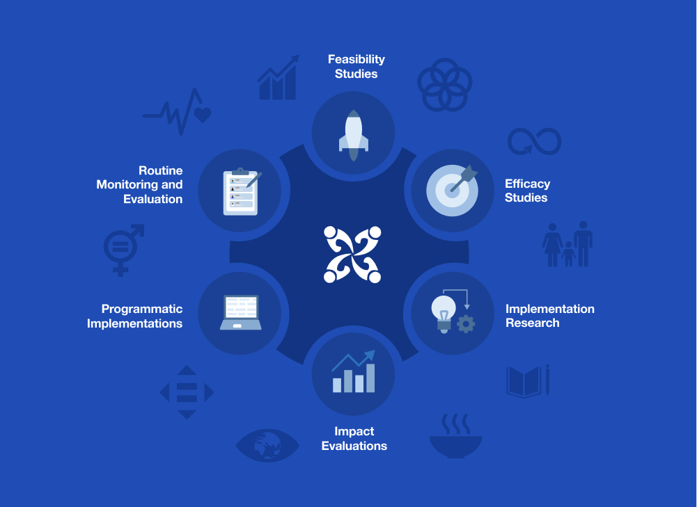
Learn more about our CommCare Research grant awardees and the work they have been doing as we share key insights from their first-hand experience with frontline research, digital data collection, and the realities of managing an NGO.
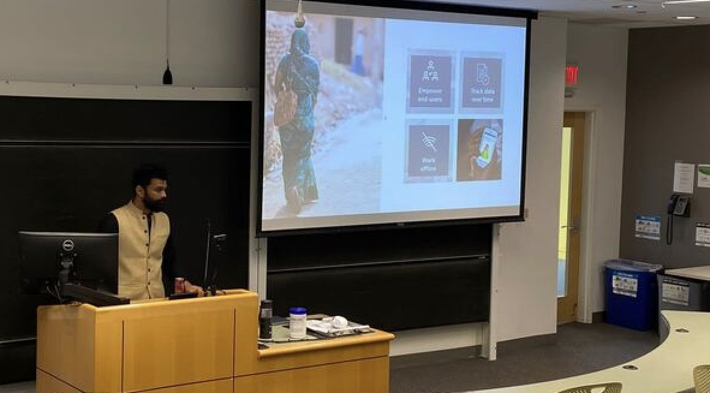
CommCare brings digital health to life in university classrooms around the world, equipping the next generation of global health and development leaders with real-world, no-code digital skills.
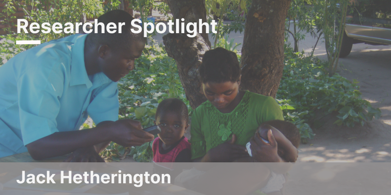
Meet Jack Hetherington, to learn about IndoDairy and how to set-up your research project and team for data collection success.

On Dimagi's 20th anniversary, we reflect on Designing Under the Mango Tree, our user-centric approach of building solutions around users' contextual needs, and revisit conversations with some of the first users of CommCare.

Vermont Care Network and Vermont Care Partners are collaborating with SureAdhere by Dimagi to scale the ‘Wheels and Waves’ program, a telemedicine intervention to treat opioid use disorder across the State of Vermont.
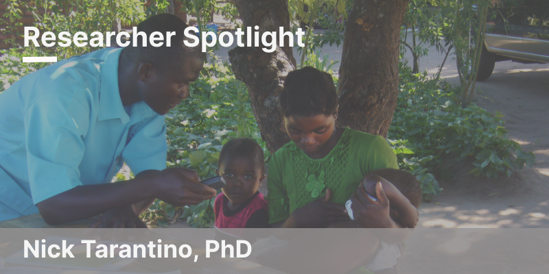
Nick Tarantino, PhD, a psychologist and Assistant Professor at Brown University, discusses his research on HIV treatment-adherence in Ghana as well as his use of gamification through mobile phones,…

Announcing a refreshed brand identity for both Dimagi and CommCare to help take us forward on the path to high-impact growth.

Dimagi's tech team held its first in-person summit in four years, bringing together the team's global workforce in Tulbagh, South Africa.

Looking back on 20 years of Impact, Team and Profit at Dimagi, and looking ahead to the next 20 years of high-impact growth.
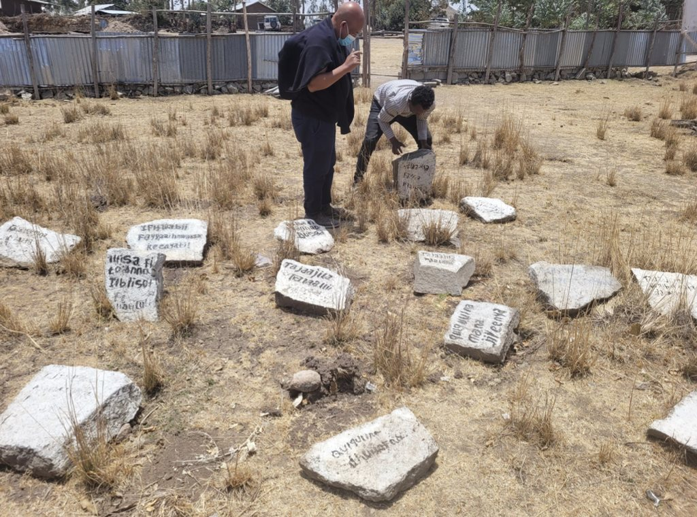
JSI leads the USAID-funded Digital Health Activity in Ethiopia, with Dimagi as a key partner supporting the Federal Ministry of Health to build and maintain the electronic community health information system (eCHIS) on CommCare.
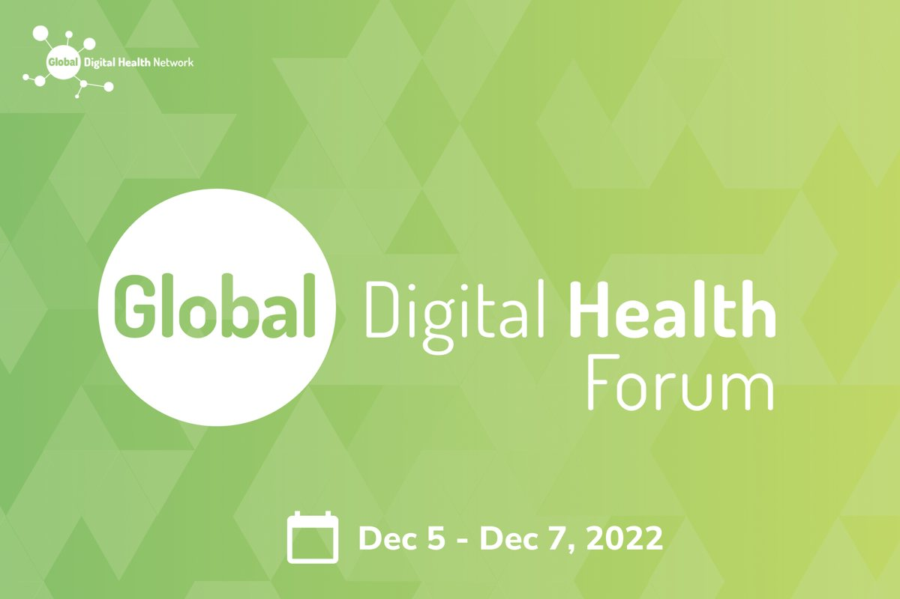
Dimagi is looking forward to a strong presence at GDHF 2022. Find out what we’ll be presenting on, and sign up for our happy hour on Monday night.
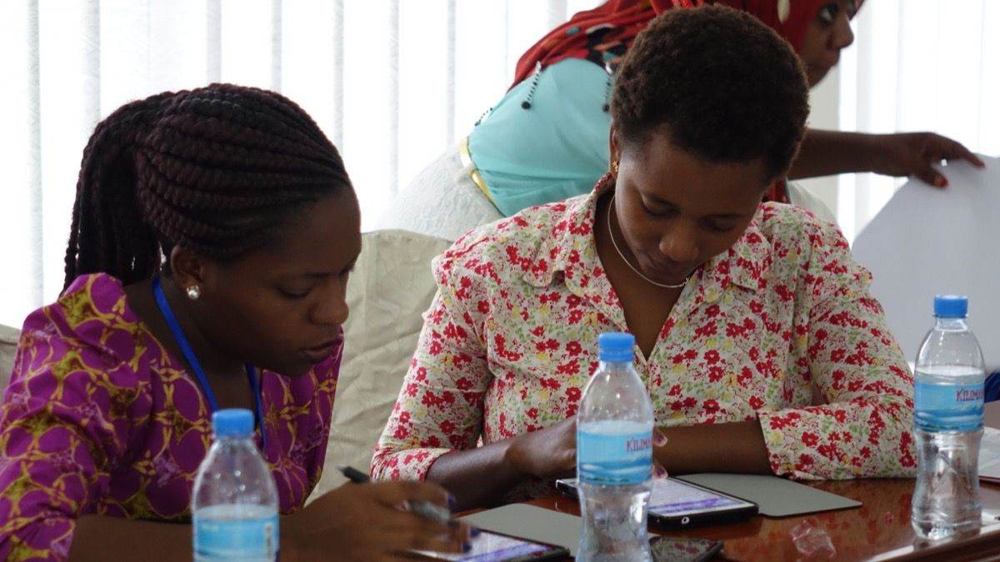
Through Dimagi's working group, we share key learnings toward developing a process for adapting, translating, and testing the Resilience Message Program for health workers living in LMICs around the world.

Announcing the first-ever CommCare Grant for Frontline Research. Learn more about the origins of the grant and the 2022 winners.
For the first time in its history, Dimagi has become a pledging organization to the Global Fund, committing USD $5 million in in-kind services to accelerate the national adoption and scale of digital tools.
Why technology entrepreneurs based in low- and middle-income countries are essential to local capacity strengthening, and how Dimagi supports them through the CommCare Provider Program.

Dimagi announced a $25 million Program-Related Investment from the Steele Foundation for Hope to fund a next generation digital platform supporting frontline healthcare workers globally.

A new project with Gorongosa National Park in Mozambique pairs GiveDirectly cash transfers with a CommCare-based mHealth application aimed at nudging cash recipients to adopt improved nutrition and food security behaviors.
Dimagi is offering a free, pre-configured monkeypox case investigation and contact tracing solution built on CommCare to any US public health department, with six months of free CommCare Enterprise Premier.
After years of a tech golden age, companies of all sizes are experiencing widespread layoffs. Dimagi's CTO shares why, even when things seem like they are falling apart, this is a great time to transition your career into social impact.

Exploring Dimagi’s approach to staff enrichment, including investing in continuous learning and expanding skills company-wide, in support of our goal of achieving high-impact growth.

A 4-step expert guide for M&E professionals on how to choose digital tools that can support and scale successful frontline programs.
Dimagi is launching the High-Impact Growth Podcast, a new way to share two decades of learnings about technology in global health and development.

The Office of National Nutrition and the Ministry of Health in Madagascar, with World Bank funding, are working to reduce childhood stunting. Dimagi optimized the CommCare-based PARN application to support this goal.

Discover how the IRC moved from fragmented data systems to a standardized frontline data collection platform with CommCare to scale global impact and security.

Dimagi is building reusable digital components to help expand access to quality mental health care, with a focus on lower and middle income countries where the unmet need is greatest.

Dimagi was a hybrid organization before hybrid had a name. Jeremy Wacksman reflects on a decade of remote work and how Dimagi is intentionally designing a thriving hybrid workplace.
The COVID-19 pandemic sharply increased demand for behavioral health care while cutting the number of inpatient beds available. Here are three digital tools that can help US state governments match patients with the care they need.

Dimagi shares its five-year strategy for 2022 to 2026, built around three strategic priorities to achieve what we call High-Impact Growth.

A first-person reflection on burnout, recovery, and how Dimagi’s flexible workplace makes work-life balance a daily reality rather than an elusive goal.
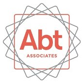
Dimagi is partnering with Abt Associates on the USAID-funded Healthy Mother Healthy Baby project, which advances digital transformation for maternal, newborn, and child health and nutrition services in Tajikistan.
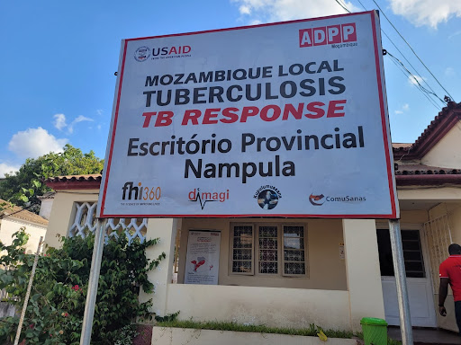
Dimagi joins the ADPP Mozambique consortium to lead digitization efforts and build DHIS2 tools that strengthen the TB Local Response across 50 districts.
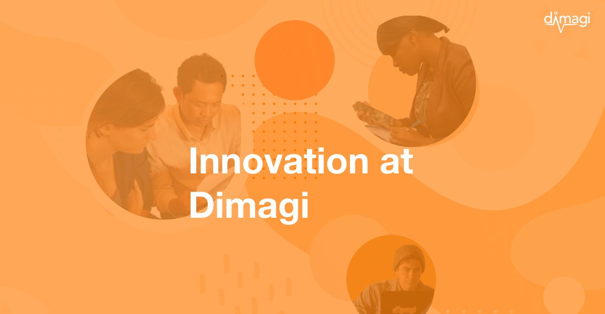
After five years of learning and reflection, here’s the advice I’d give to other organizations considering how to drive innovation from within.
First hand reflections from a new marketing leader at Dimagi on the organization's culture. What makes Dimagi a different kind of tech company?

Dimagi is both a B Corp and a Benefit Corporation. Here is what it means to be both, and why it matters to us to be both for-profit and a force for good.

Dimagi acquires SureAdhere to bolster digital solutions for Frontline Workers, enable new virtual care models, and strengthen the clinical trials digital ecosystem.
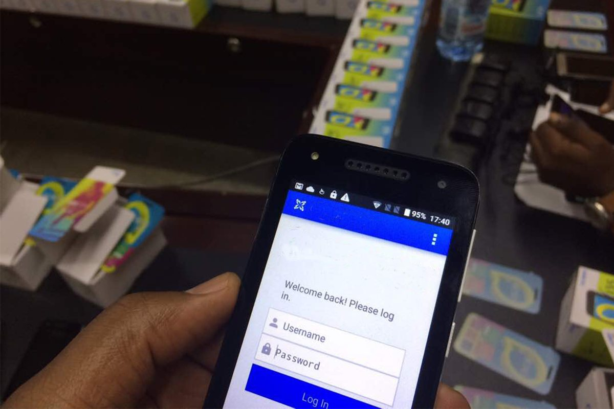
Dimagi’s CTO reflects on the log4j and Linux vulnerabilities and what recent IT security news means for Digital Development organizations.
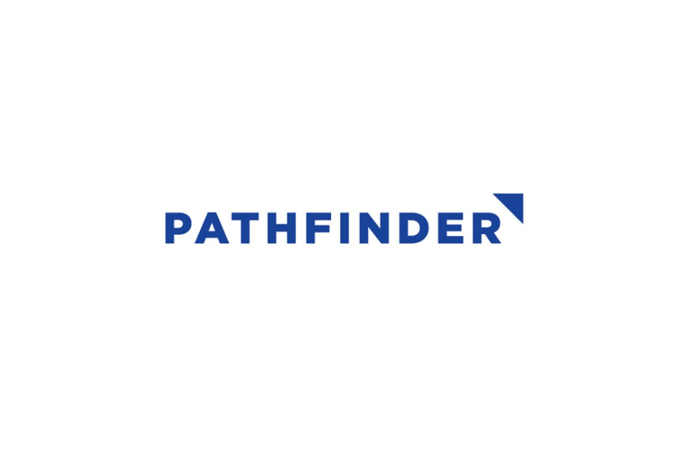
Dimagi is partnering with Pathfinder on the Youth Voices for Agency and Access (YUVAA) program in India to build a digital agent that helps newly married couples and first-time parents make informed family planning decisions.
Dimagi is committing $3 million and signing an MOU with The Global Fund to provide 50% match funding to countries that leverage Global Fund grants to scale up Dimagi digital tools.
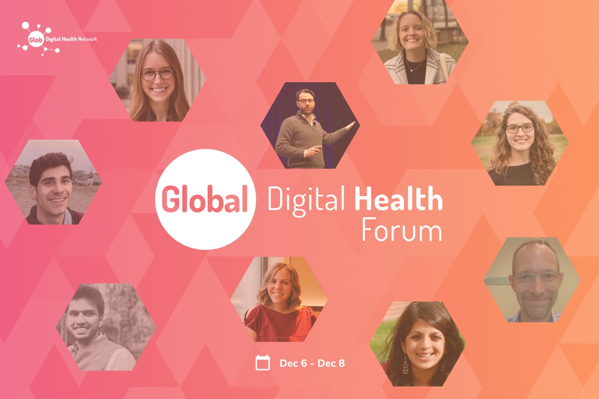
Ten Dimagi team members will be presenting across eleven sessions at the virtual Global Digital Health Forum 2021, spanning open source, COVID-19 response, chatbots, scaling, and more. We hope to see you there.
Dimagi is partnering with the Malawi Ministry of Health to revive and transition to local ownership the proven cStock supply chain system for the community level.

Dimagi is continuing work with The Resilience Collaborative at the Johnson & Johnson Center for Health Worker Innovation to co-create and adapt a set of messages intended to build the resilience skills of CHWs in low- and middle-income countries.
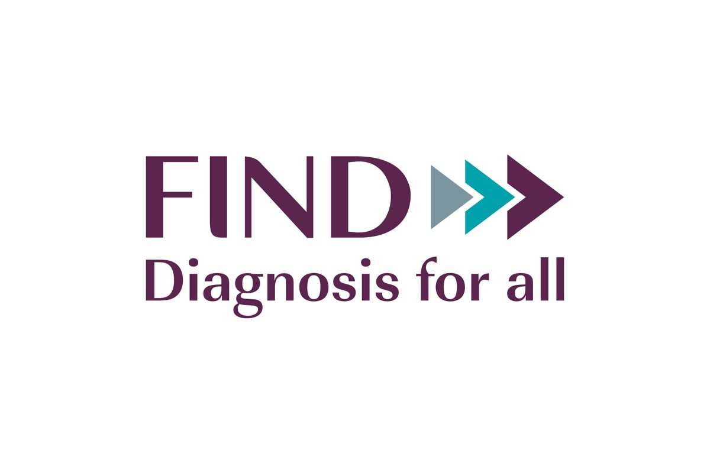
FIND and Dimagi have partnered to develop a new CommCare template application that guides health workers through running COVID-19 antigen rapid diagnostic tests (RDTs).
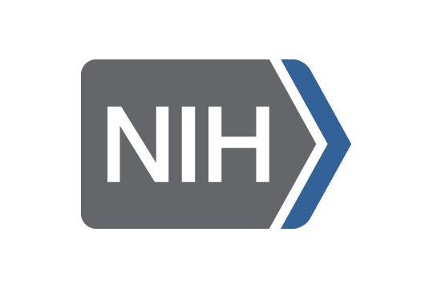
Dimagi and the NIH are working together to design a patient navigation application for long-term cancer survivors shifting from oncology-based to primary and community-based care.

The fourth in a series of regular updates, Dimagi Senior Director of New Business Shabnam Aggarwal shares learnings from the marketing and sales strategy behind FocusMDM.
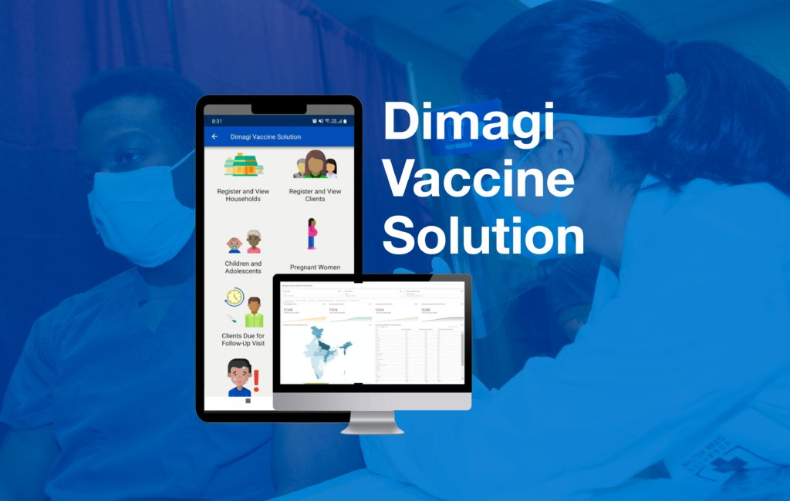
Disruptions in routine immunization due to COVID-19 can lead to secondary health crises, especially in children. Dimagi has expanded the platform used to deliver more than 1 million COVID-19 vaccines to include routine immunization.
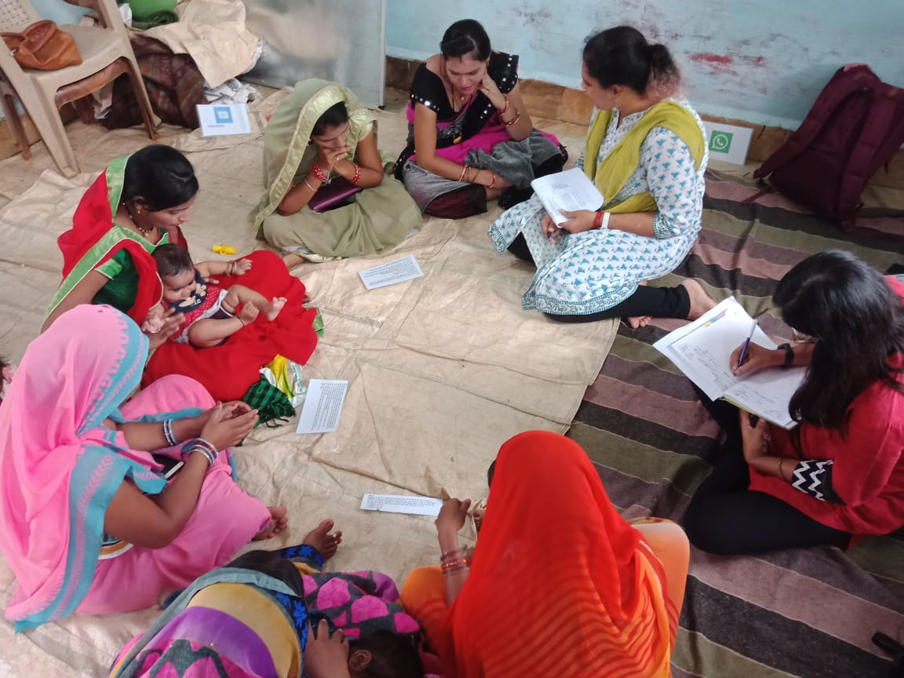
In the pursuit of universal health coverage, there are many forms of direct-to-client solutions in development, such as mobile apps and chatbots. Dimagi’s Director of Consumer Innovations explains our approach to developing such tools.

Step 4 in Dimagi’s Innovation Lifecycle is determining price sensitivity. Here is how the team used the Van Westendorp Price Sensitivity Meter to find an early signal on willingness to pay.
Catholic Relief Services is working with Dimagi to prepare and host six full-day training sessions to help improve their ICT teams' case management and advanced app-building skills.

Dimagi has signed the Climate Pledge, joining more than 200 businesses committed to achieving net-zero carbon emissions by 2040, a target Dimagi has already reached.

Dimagi has created a Prioritized Tasking Framework that aims to help CHWs focus on service delivery, enable data-driven decision making, and provide patients access to better care.
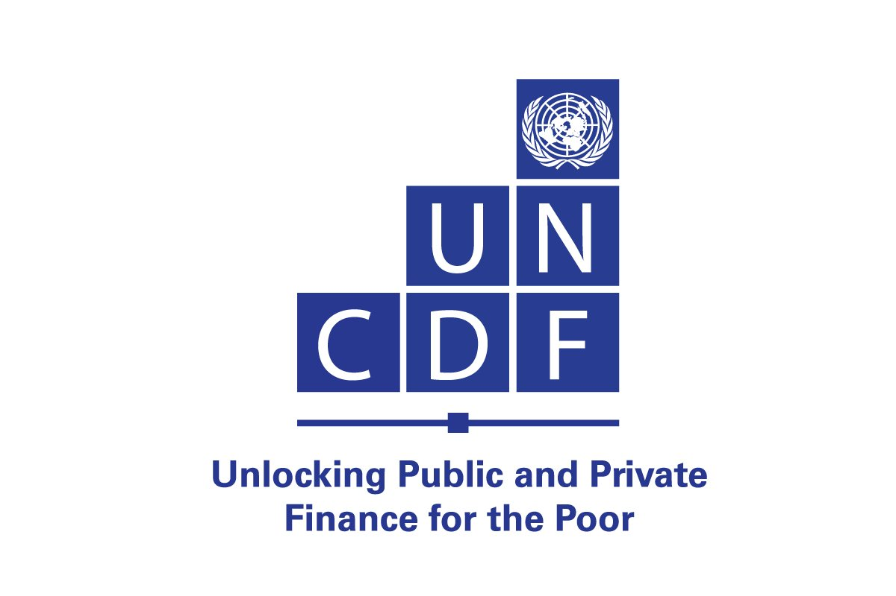
UNCDF partnered with Baobab Senegal, Corprobat, and Dimagi to pilot a digital solution for the agricultural sector, now scaling up to reach an additional 2,250 smallholder farmers.
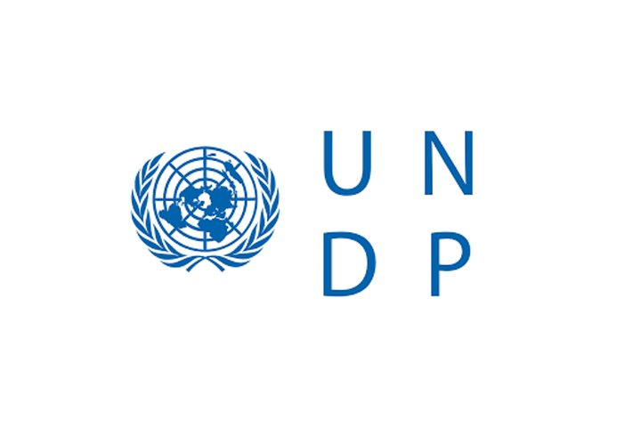
The Cameroonian government and the UNDP worked with Dimagi to launch the economic resilience support project (PAREC), building a mobile application that delivers financial training and supports savings groups for vulnerable populations.
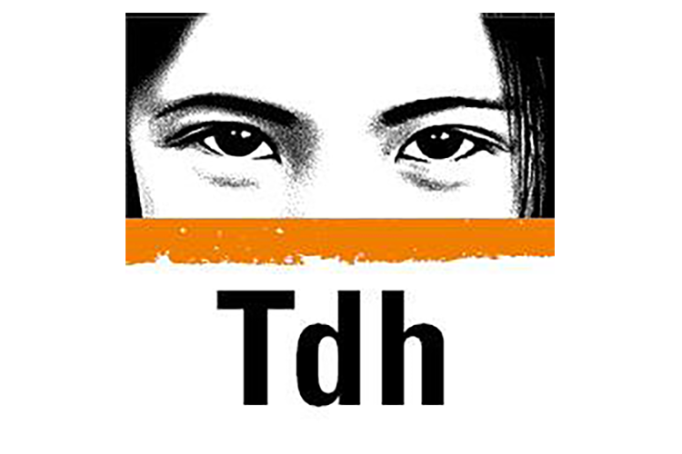
Terre des hommes partnered with Dimagi to replicate and expand COVID-19 screening, triage, and health-worker training tools, building on a deployment in Jharkhand, India.

Terre des hommes, Dimagi, and partners deployed COVID-19 triage, screening, and health-worker training tools across primary health centers in Jharkhand, India.
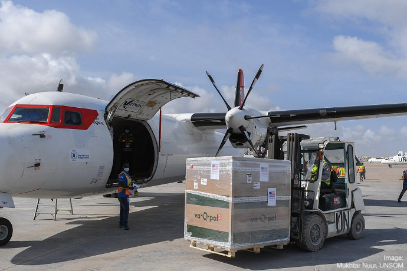
Dimagi has officially launched its Crisis Response Corps (CRC): a team dedicated to rapidly building durable digital solutions for immediate impact in emergency and humanitarian response.
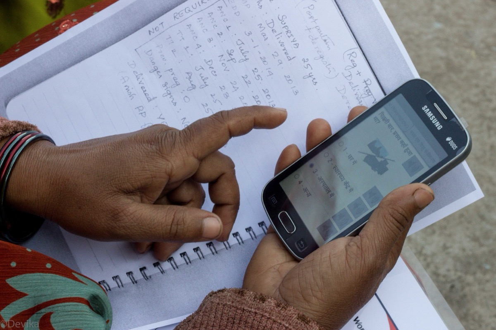
Dimagi has partnered with PATH and Digital Square to create a turnkey integration between CommCare and Fast Healthcare Interoperability Resources (FHIR), making it easier to share health data securely across systems.
After a seven-year run from 2011 to 2018, Dimagi was once again named to the Inc. 5000 List of the fastest-growing private companies in America.

In a partnership with Dimagi, UNICEF and the Private Sector Vaccine Initiative, the Government of Jamaica has rapidly launched a digital system to manage COVID-19 vaccine delivery nationwide using CommCare.
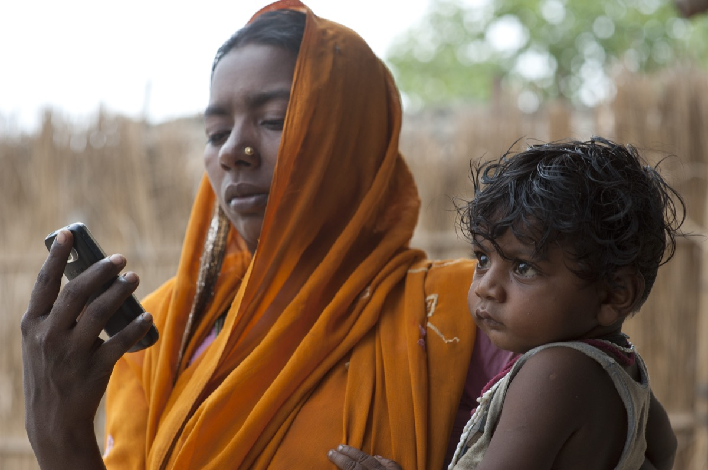
Dimagi partnered with the Johnson & Johnson Resilience Collaborative to user test a mobile messaging program for community health workers in India, designed to boost resilience and protect against burnout.
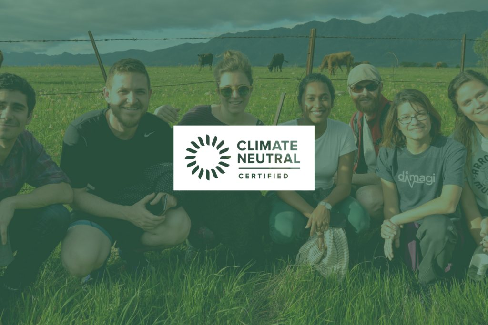
As of June 30, 2021, Dimagi is officially Climate Neutral Certified, taking responsibility for its global carbon emissions through measurement, offsets, and a reduction plan.

Dimagi, Medic, and The Rockefeller Foundation collaborated on a report exploring how investments in digital platforms for frontline workers today can help prepare for future pandemics.

In this third post in a series of regular updates, Dimagi Senior Director of New Business Shabnam Aggarwal shares what the team has learned about the sales strategy behind FocusMDM.

The next piece in our Innovation at Dimagi series highlights our team's approach to evaluating current and upcoming projects honestly and efficiently.

USAID’s Journey to Self-Reliance aims to eventually eliminate the need for foreign assistance. See how Dimagi is helping Malawi’s Ministry of Health build a locally-owned, locally-sustainable digital health system through the USAID-funded ONSE Project.
As the United States moves to the next stage of its pandemic response, Dimagi is working with Abt Associates and local community-based organizations to fight vaccine hesitancy in some of the country’s most vulnerable populations.

The next piece in our Innovation at Dimagi series introduces the Innovation Lifecycle, a series of 28 steps our New Business team goes through from market research to transitioning to the core business.
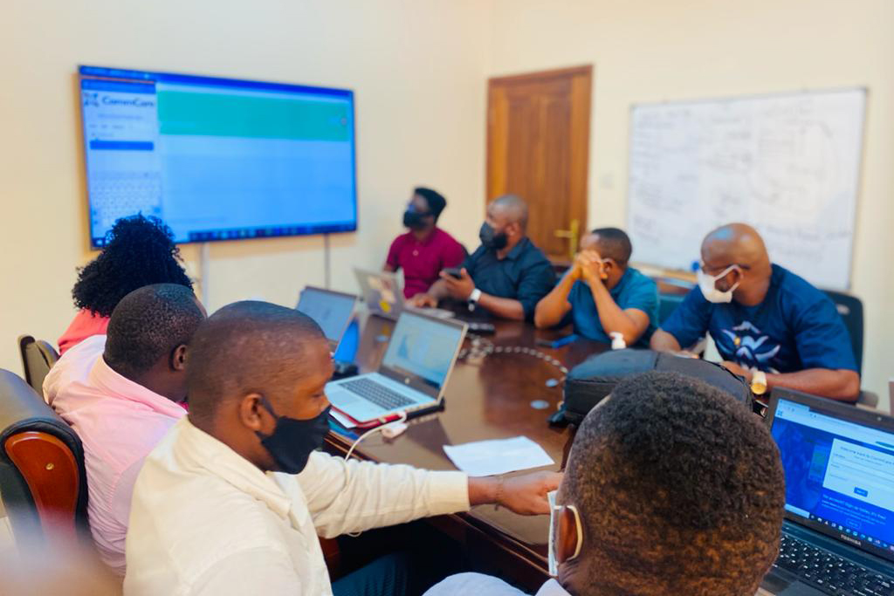
More than a year on from the release of our first template applications for COVID-19 response, a look at how our partners have been putting them to use across the globe.
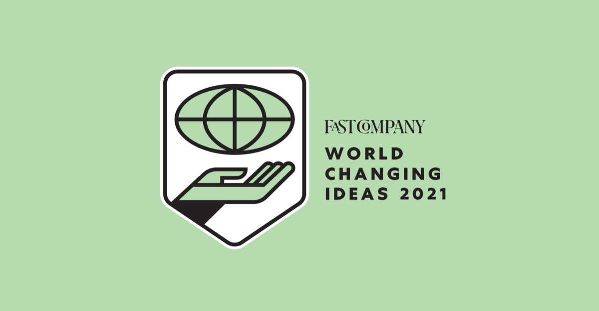
Fast Company selected CommCare for Vaccine Delivery as a finalist in the Developing World Technology category and gave Dimagi an honorable mention for Pandemic Response in its 2021 World Changing Ideas Awards.
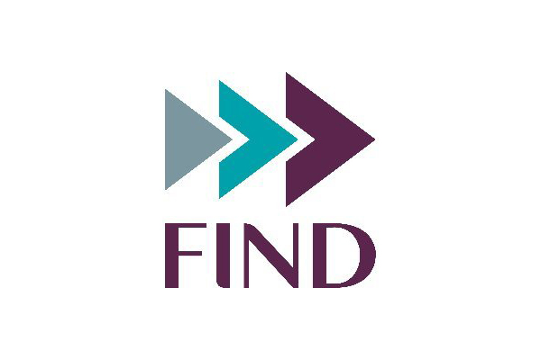
FIND contracted Dimagi to develop and support a digital tool for monitoring and evaluation of antigen rapid diagnostic test trainings across up to 15 low- and middle-income countries.
Dimagi worked with Tufts University and IITA to design and build a nutrition survey tool in support of IITA's national food consumption survey in Nigeria.

In the fourth entry in our series on Innovation at Dimagi, Jon explains how and why to differentiate funding from innovative sources from true revenue.

A candid March 2021 update in Dimagi’s Building in the Open series, reflecting on the Focus mobile device management product’s sales pipeline, strategic partnerships, and the decision to keep the tool simple.
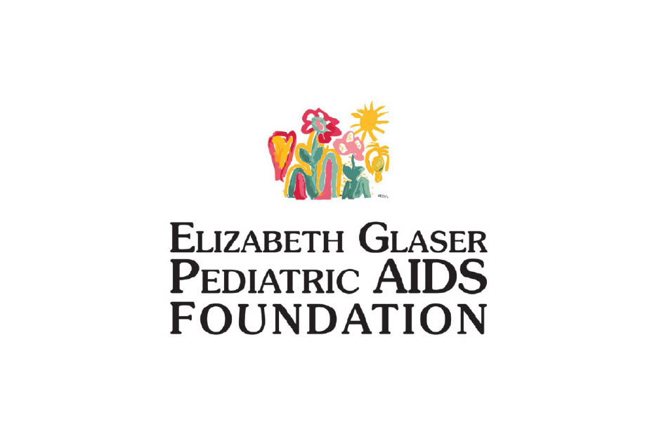
Working with EGPAF-Malawi, Dimagi is designing, developing, and testing a pilot mobile solution to support testing of children and partners who might be at risk of HIV in Malawi.

Teuk Saat 1001, a non-profit supporting rural water treatment and vending in Cambodia, has become an excellent example of a locally-owned program able to operate and update its CommCare application independently.
The Government of Somalia, the regional WHO team, and Dimagi launched a CommCare-based system to manage COVID-19 vaccine delivery and track individuals through the vaccination process.
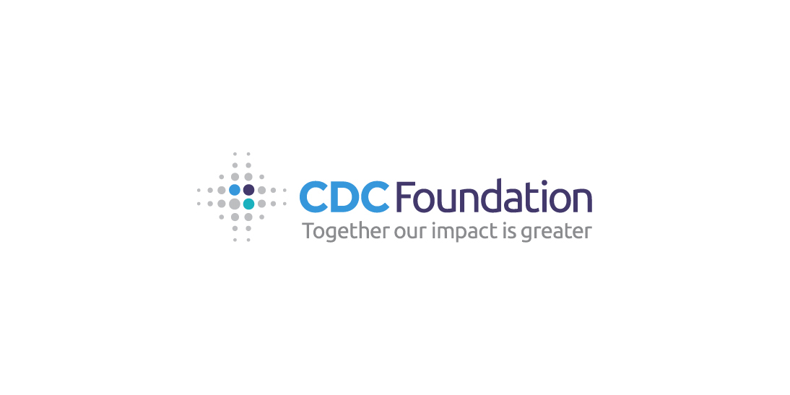
The CDC Foundation has engaged Dimagi in a pilot of the Pregnancy Outcomes and Death Surveillance in Humanitarian and Fragile Settings (PODS) project, building a mobile health solution to capture maternal and newborn health data in Burkina Faso, Chad, and Cameroon.
RTI International is partnering with Dimagi to build a baseline survey and a CommCare service-delivery app for the USAID Integrated Early Childhood Development Activity in Cambodia.

In the latest post on Innovation at Dimagi, Shabnam explains how we account for Dimagi’s core mission of “Impact, Team, and Profit, in that order” in our New Business work.
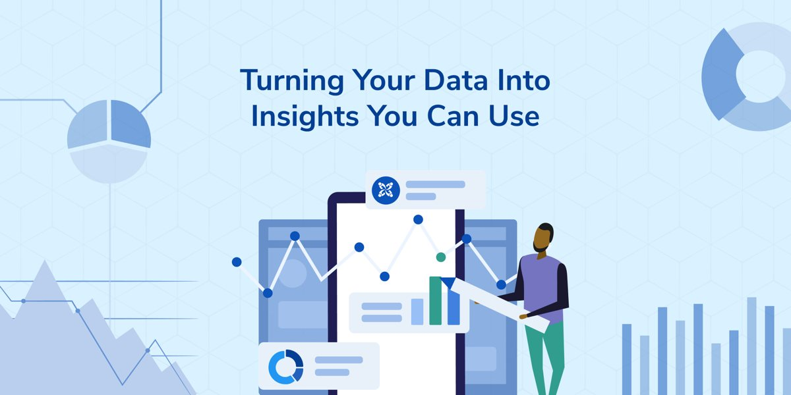
Our Customer Success team outlines five key steps for setting up a process of continual improvement for your programs, with lessons from our partners at MiracleFeet.

The first in a series of monthly updates, Dimagi Senior Director of New Business Shabnam Aggarwal outlines the work of the New Business team, focusing on the mobile device management platform, Focus.

In the second post in our Innovation at Dimagi series, CEO Jonathan Jackson explains how we reformed our approach to innovation and exploration at Dimagi and how it gives us greater confidence in the results of our tests.
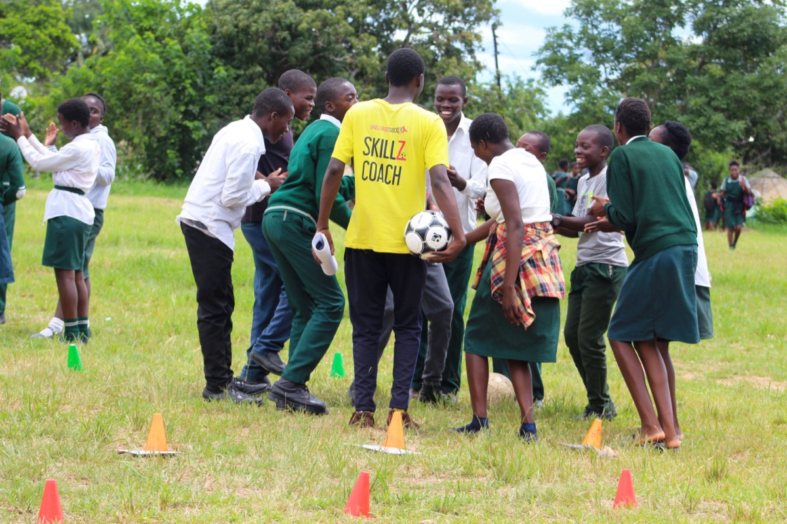
Dimagi is partnering with Grassroot Soccer to design, build, and test a CommCare-based application and two-way SMS solution that supports programmatic data collection for the organization’s Coaches.
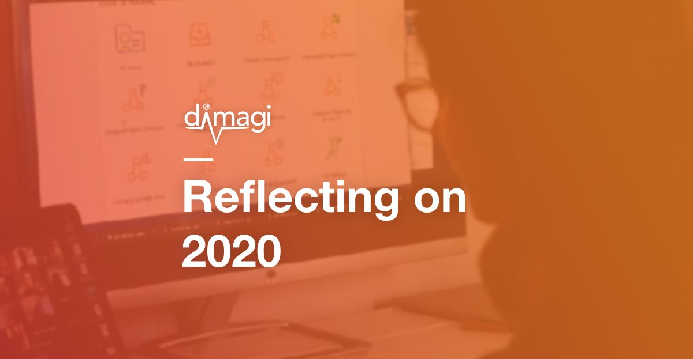
Dimagi CEO Jonathan Jackson reflects on a year filled with uncertainty, challenges, inspiring partners, and no small amount of hard work.

As viable COVID-19 vaccines become available, the tools we use to ensure their equitable delivery will determine whether we can overcome the challenges that accompany them.
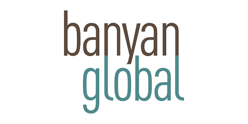
Banyan Global has partnered with Dimagi to build an SMS-based system designed to keep youth in Honduras engaged in a program that promotes employment and education resources.

In a new series on Dimagi's unique approach to innovation, Senior Director of New Business Shabnam Aggarwal discusses her role as a dedicated entrepreneur within the company.
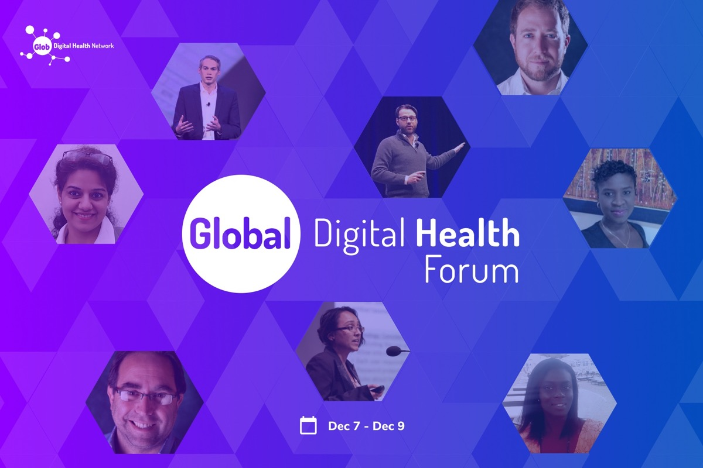
Dimagi will be well represented at this year’s Global Digital Health Forum, with eight members of our team speaking alongside many of our partners in nine sessions.
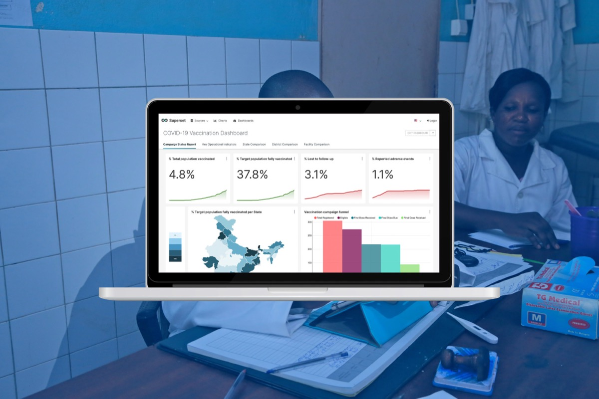
To support the next phase of COVID-19 response, Dimagi is developing an open-source digital global good to track and support every client before, during, and after vaccination.

While tuberculosis incidence has decreased worldwide, low- and middle-income countries still bear the greatest burden. Dimagi is working with governments and implementing partners around the world to fight the disease with CommCare.
Supported by CommCare, South Africa's WBPHCOT program focuses on improving nutrition, reproductive health, primary care, and social services across the country.
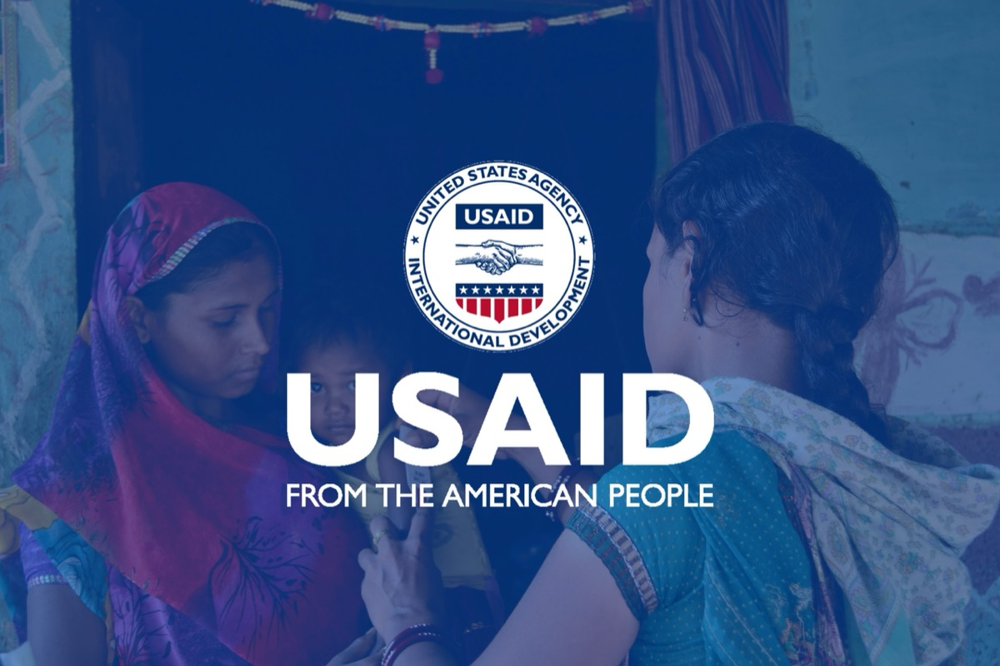
A new USAID Advancing Nutrition report features CommCare-supported projects in Africa, South America, and Asia, naming CommCare the platform most commonly used for nutrition-related digital interventions.

Infomovel connected more than 1,750 community health workers across seven provinces of Mozambique with CommCare, reducing loss to follow-up and aligning fragmented partners around the UNAIDS 90-90-90 targets for HIV and TB.
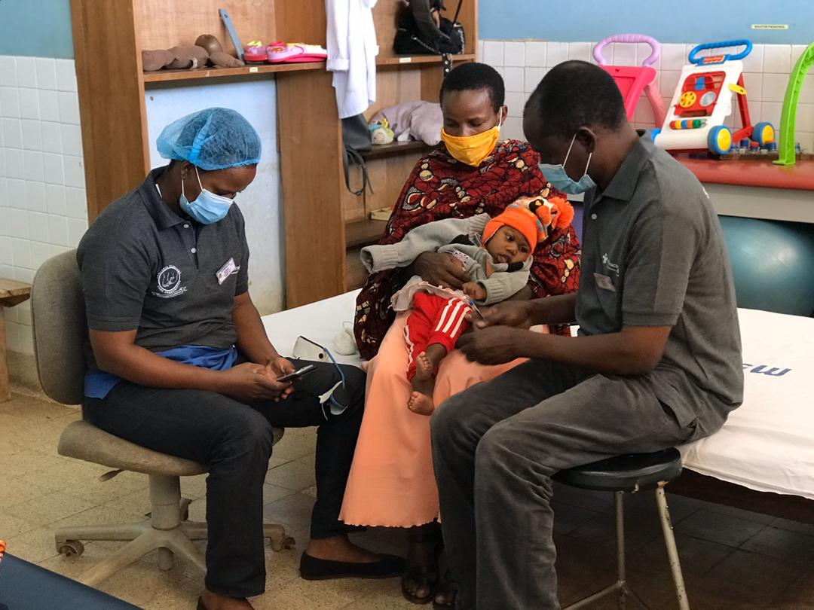
MiracleFeet uses CommCare to track clubfoot treatment across its global network. Co-Founder and CEO Chesca Colloredo-Mansfeld explains how the work evolved during the COVID-19 pandemic.

Dimagi CEO Jonathan Jackson shares highlights from a joint post with the COVID Response Alliance on the World Economic Forum blog, on the vital role of social entrepreneurs in the recovery from COVID-19 and the achievement of the Sustainable Development Goals.

Google.org has selected Dimagi and Medic Mobile to receive funding for projects using innovative AI and data analytics to help organizations improve their response to COVID-19.
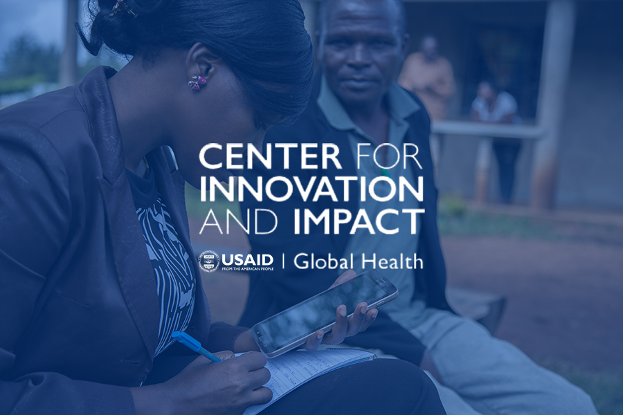
USAID’s Global Health Innovation Index, an annual evaluation from the Center for Innovation and Impact, highlighted CommCare as a “potential game changer.”

Due to the pandemic, Dimagi shifted to a fully remote project execution approach to keep delivering maximum impact while keeping our team and partners safe.

How Malaria Consortium's upSCALE program used CommCare for integrated community case management (iCCM), helping community health workers improve child health in Mozambique.

How TechnoServe worked with Dimagi to build a suite of CommCare-based monitoring and evaluation tools that reaches nearly half a million beneficiaries across Africa and Latin America, cutting implementation time in half.
With the coronavirus continuing to spread across the continent, Dimagi is partnering directly with NGOs and ministries of health across Africa to implement CommCare for everything from workplace screening to facility readiness and contact tracing.

Originally shared on the AWS Public Sector Blog, this post highlights how Dimagi’s CommCare and Amazon Connect helped the New York State Department of Health scale up COVID-19 contact tracing.
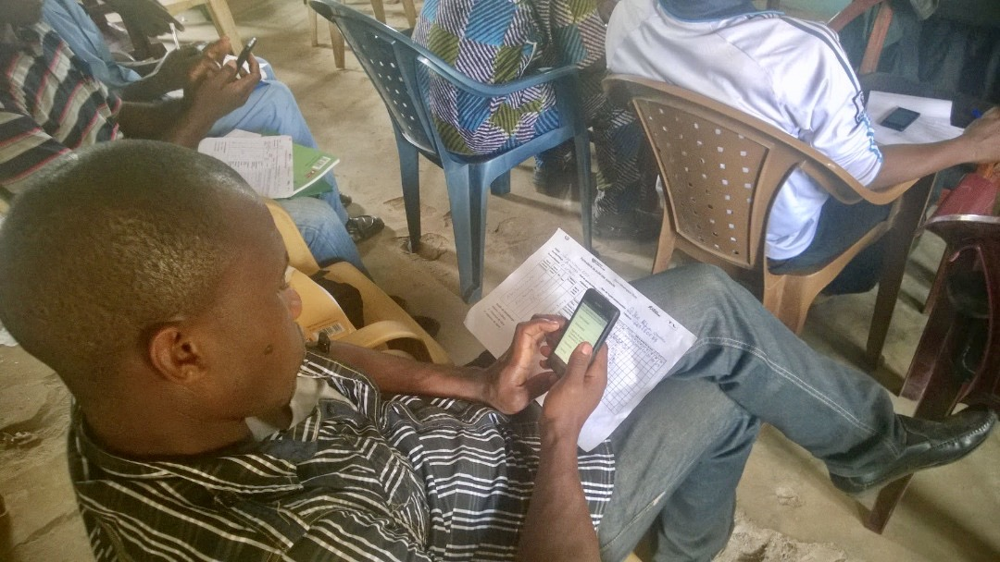
Anne Liu, an expert on mobile tools for disease surveillance, shares her experience supporting the Government of Guinea in launching a national digital contact tracing program during the 2014 Ebola epidemic.
In a recent assessment of digital solutions for COVID-19 response, the Johns Hopkins Bloomberg School of Public Health highlighted CommCare for its existing deployments, flexibility, and ease of use.
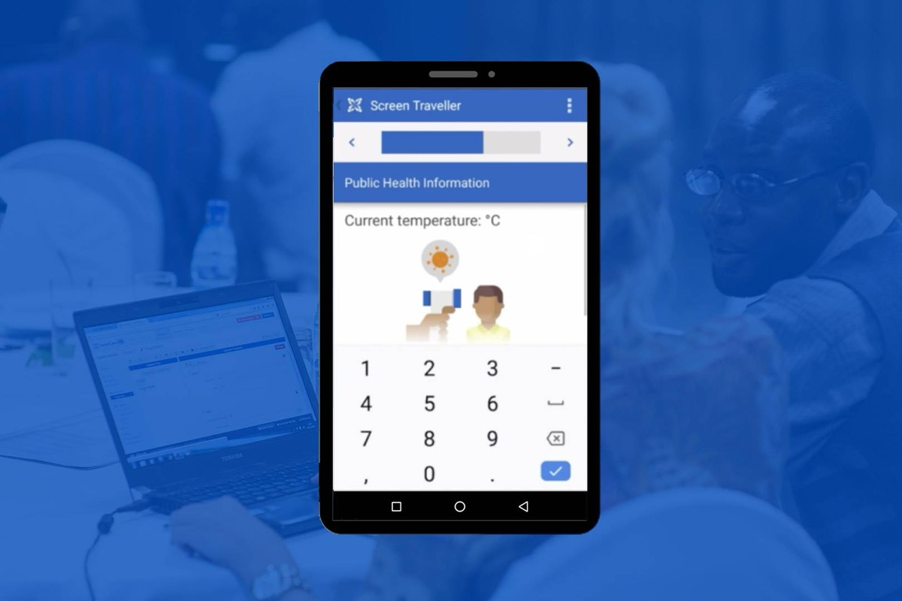
As more countries reopen their borders, Dimagi has developed a Port of Entry Surveillance application to screen travelers for COVID-19 risk factors and symptoms at air, sea, rail, and land ports of entry.

The Healthcare Provider Training & Monitoring template application gives frontline workers responding to COVID-19 easy access to resources for education, training, risk assessment, and symptom screening.
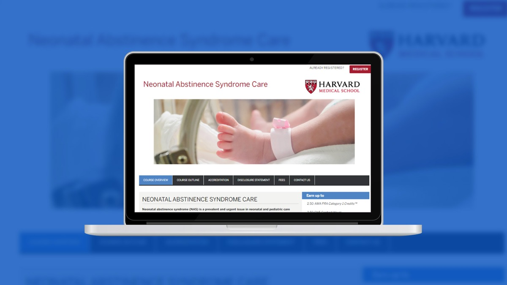
Dimagi is leading a federally funded project to develop digital tools for the care of infants with Neonatal Abstinence Syndrome, and has launched a new online course with Harvard Medical School.

The Facility Readiness template application supports facilities responding to COVID-19 to assess their readiness and keep track of vital stock.

TED announced that Sentinel, a pandemic preemption system built by the Broad Institute, ACEGID, Dimagi, Fathom, and MASS Design, will be part of the 2020 Audacious Project.

To help partners rapidly set up their COVID-19 data pipelines, Dimagi built template dashboards for Excel, Power BI, and Tableau that connect to CommCare through its built-in integration features.

To support organizations coordinating COVID-19 response around the world, Dimagi is developing a collection of free template CommCare applications for the various phases of outbreak response.

Dimagi is working with the City of San Francisco, the Department of Public Health, and UCSF to support contact tracing across the city as part of their COVID-19 response efforts.
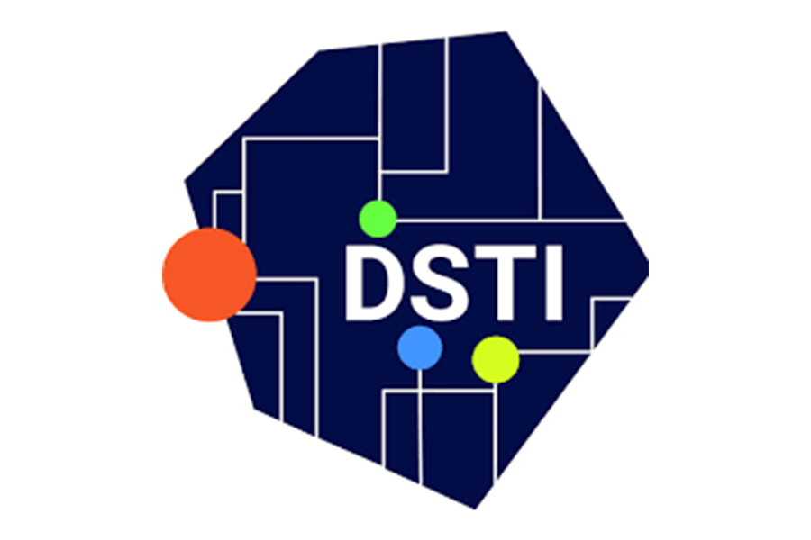
DSTI and Dimagi partnered to develop digital contact tracing solutions for COVID-19 in Sierra Leone, building on lessons learned from the country's Ebola response.
Dimagi has released an application template encoding the full WHO FFX Contact Tracing and Reporting protocols, ready to deploy in minutes for COVID-19 response.
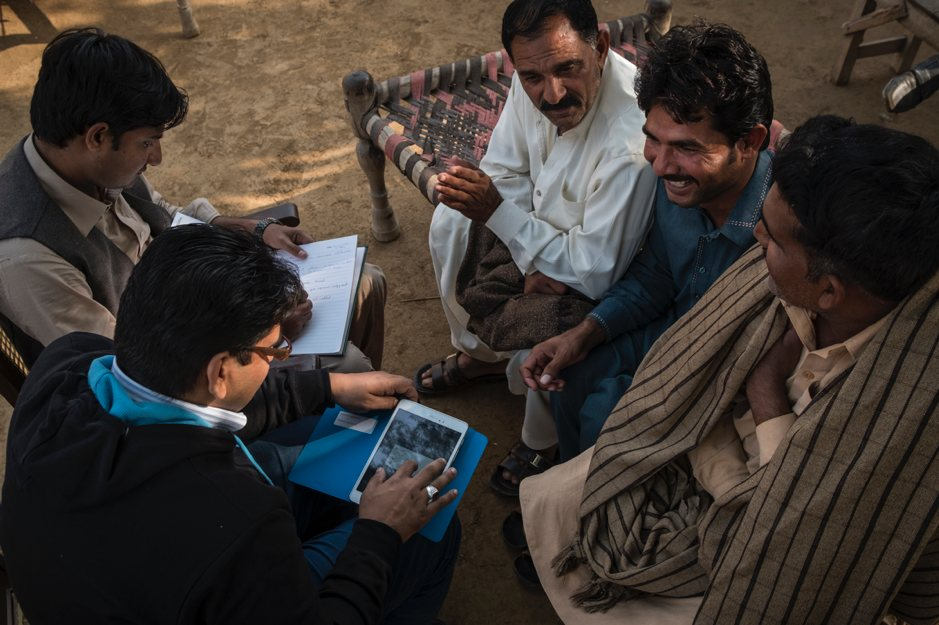
Dimagi is one of many actors using technology to support efficient cash delivery to the regions that need it. Learn how CommCare powers cash transfer programs with partners around the world.
Open source tools are a critical piece of global infrastructure, and they need champions for long-term investment.

Dimagi is offering pro bono CommCare subscriptions to COVID-19 response applications through May 2021. Find out if your project qualifies and apply today.
Dimagi released a free CommCare template application implementing the World Health Organization's FFX protocol for COVID-19 case reporting and contact tracing.
Learn how to use storytelling to establish reliable and relatable user workflows and understand the unique challenges of your mobile app's users.

Two high-profile technology failures, the Iowa caucus app and a UN data breach in Geneva, reveal cautionary lessons for practitioners building software in the public sector and in digital development.
We use card sorting often to help participants explain their expectations and understanding of various topics. Learn how to employ this research technique with examples from our work in the field.
The Baylor College of Medicine’s Children’s Foundation Lesotho is working with Dimagi to expand a CommCare-based client tracking tool to two more districts, the final step before national deployment.

York University Associate Professor Maggie MacDonald published a study in BMC Reproductive Health exploring how mobile health interventions can improve maternity care in remote, rural, and underserved communities in Senegal.

How the Naatal Mbay program built CommAgri on CommCare to register 68,000 farmers and coordinate 500 extension agents across Senegal's rice, maize, and millet value chains.

How Lwala Community Alliance reached 95% vaccination coverage across 60,000 people in western Kenya and cut child mortality from 105 to 29.5 per 1,000 live births with a custom CommCare app.

How MHP Salud used CommCare to unify 10 grant-funded health initiatives under a single app, cutting data submission time by 89% and saving more than $14,000 a year.

How Terre des hommes deployed an integrated electronic diagnostic approach on CommCare to improve the quality of frontline child healthcare across 1,132 clinics in Burkina Faso.

How TulaSalud used CommCare to improve and monitor community health in Guatemala, supporting community facilitators and strengthening maternal and child care.